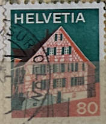
| SOURCE | TITLE| IMAGE MATCH | click to source page |
| HipStamp | Switzerland Scott 568 MNH** from 1973-1980 No Fiber paper | Europe - Switzerland, General Issue Stamp / HipStamp | 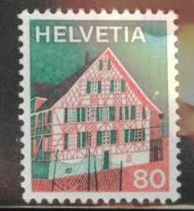 |
| eBay | SWITZERLAND STAMP MNH [SALE] [Choose 10pc of MINT is $3.5] unused WM8951 | eBay | 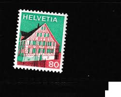 |
| eBay UK | Helvetia 80 Postage Stamp 1973 Used | eBay UK | 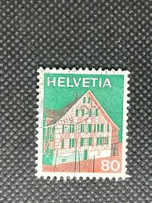 |
| HipStamp | Switzerland SC 558-68 MNH (1ffe) | Europe - Switzerland, General Issue Stamp / HipStamp | 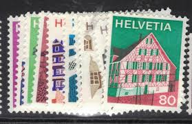 |
| Todocolección | lote de 41 sellos usados de suiza -ginebra en 1 - Compra venta en todocoleccion | 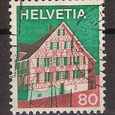 |
| Taobao | 1973年邮票怎么翻译_1973年邮票英文用法_1973年邮票英语例句_淘宝翻译网 | 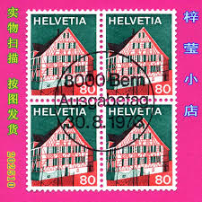 |
| Todocolección | suiza helvetia 90 c. año 1924.. - Buy Antique stamps of Switzerland on todocoleccion | 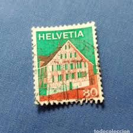 |
| Bob Shop | Switzerland & Helvetia - 1973 HELVETIA - SG853-854 used stamps was listed for 8.80 on 5 Jun at 16:01 by KHB56 in Johannesburg (ID:642499877) | 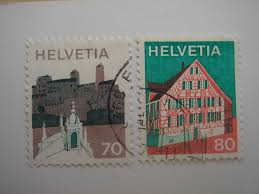 |
| 123RF | Helvetia Postage Stamps (Isolated On Black Background) 로열티 무료 사진, 그림, 이미지 그리고 스톡포토그래피. Image 167651177 | 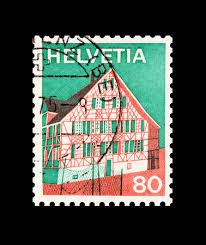 |
| alamy.it | Switzerland stamp helvetia 25 immagini e fotografie stock ad alta risoluzione - Alamy | 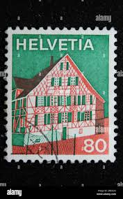 |
| 🏠una casita de Suiza -Helvetia es el nombre que se le da a la personificación femenina de Suiza🇨🇭- . . . . . #filatelia #letter #stamp #carta #cartas | 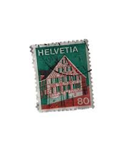 | |
| Find Your Stamps Value | Federal Administration, Villages: Jura 25c Emerald & violet blue stamp price, value | 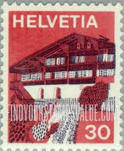 |
| Aukro | Švýcarsko 1973 | Aukro | 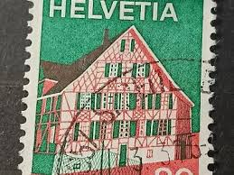 |
| eBay | Switzerland, Postage Stamp, #565-568 Mint NH, 1973 Villages (AC) | eBay | 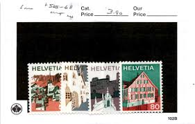 |
| Aukro | Známky Švýcarsko kříže | Aukro | 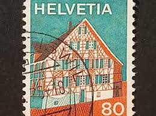 |
| Amazon.com | Amazon.com: Switzerland 878-886 (Complete.Issue) unmounted Mint/Never hinged ** MNH 1968 Building (Stamps for Collectors) : Toys & Games | 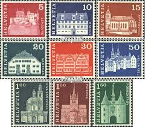 |
| eBay | Switzerland, Postage Stamp, #558-562, 564-565, 567-8 Mint NH, 1973 Villages (AD) | eBay | 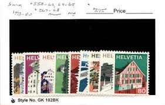 |
| Find Your Stamps Value | Federal Administration, Villages: Central Switzerland (2 buildings) 35c Red orange & bright violet stamp price, value | 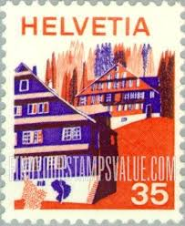 |
| Todocolección | suiza , 1965, alpes, mattelhorn - Buy Antique stamps of Switzerland on todocoleccion | 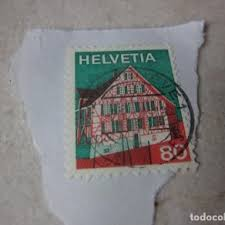 |
| eBay UK | Switzerland 1973-80 SG#851, 30c Buildings, Definitive MNH #A70044 | eBay UK | 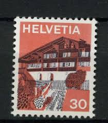 |
| Flickr | helvetia | schweizer briefmarke | joëlle | Flickr | 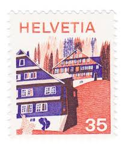 |
| eBay | Switzerland 1975, Definitives, Landscapes set MNH, Mi 1067 | eBay | 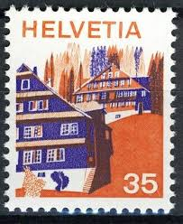 |
| Chevy Chase Collectibles | Our Collections - Chevy Chase Collectibles - Exclusive Gems | 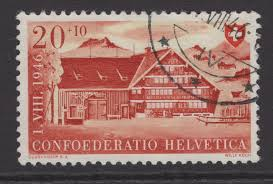 |
| eBay | EBS Switzerland Helvetia 1946 Farmhouse in Appenzell Michel 473 MNH** | eBay | 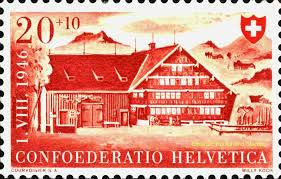 |
| eBay | ✔️ HELVETIA SCHWEIZ SWITZERLAND NICE FDC COVER AUSGABETAG ERSTTAGSBRIEF | eBay | 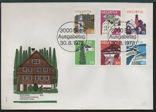 |
| Shutterstock | Switzerland Lettering: Over 6,845 Royalty-Free Licensable Stock Photos | Shutterstock | 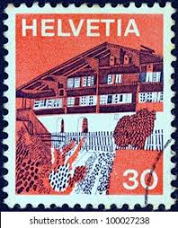 |
| eBay | SWITZERLAND STAMP MNH [SALE] [Choose 10pc of MINT is $3.5] unused WM8902 | eBay | 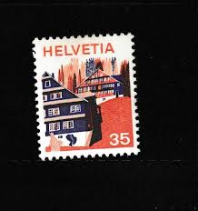 |
| Etsy | 8 Vintage International Stamps From Switzerland / Helvetia From 1920s and 70s - Etsy | 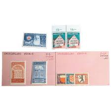 |
| Stamp Community Forum | Switzerland Stamp Engravers - Page 7 - Stamp Community Forum | 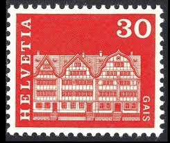 |
| Mystic Stamp Company | B146-49 - 1945 Switzerland - Mystic Stamp Company | 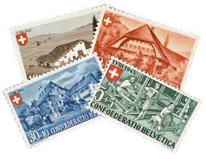 |
| eBay | Switzerland #559-60, 562, 564-5, 567-8 used | eBay | 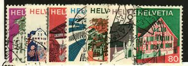 |
| eBay | SWITZERLAND SCOTT # B156, HOUSE IN APPENZELL, USED, VERY FINE, GREAT PRICE! | eBay | 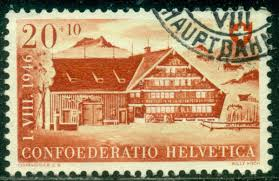 |
| Find Your Stamps Value | Value of helvetia 1982 stamps | 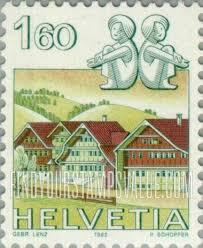 |
| Dreamstime.com | 1975 Swiss 50 Rappen Blue Postage Stamp Featuring Traditional Alpine Village Architecture with Gothic Church Spires Editorial Stock Image - Image of church, swiss: 402079089 | 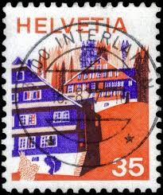 |
| eBay | SWITZERLAND 562 - Landscapes "Central Switzerland House" (pf19223) | eBay | 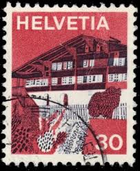 |
| lastdodo.com | Gais Stamp catalogue - LastDodo | 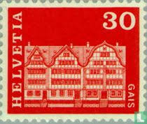 |
| eBay UK | 1946 Switzerland National Fete Swixx Citizens Abroad SG468-470 mounted mint | eBay UK | 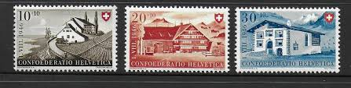 |
| Dreamstime.com | 2,678 Stamp Switzerland Stock Photos - Free & Royalty-Free Stock Photos from Dreamstime | 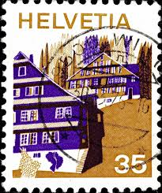 |
| eBay | 1946, Schweiz, 473 III, ** - 1595225 | eBay | 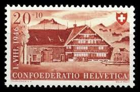 |
| eBay UK | Architecture Used Switzerland Stamps for sale | eBay UK | 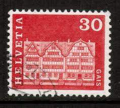 |
| eBay | Switzerland #441, 443, 562, 564B used | eBay | 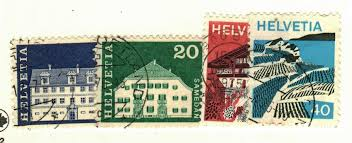 |
| ProBoards | Houses | The Stamp Forum (TSF) | 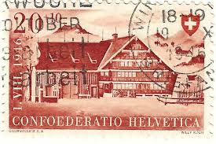 |
| Shutterstock | Karnal Haryana India -august 8th 2025-closeup Stock Photo 2674430599 | Shutterstock | 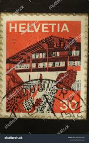 |
| Bob Shop | Switzerland & Helvetia - SWITZERLAND 1982 Definitive Issues UMM SG 1038 was listed for 0.00 on 1 Apr at 07:46 by trevorfrsr in Durban (ID:638309220) | 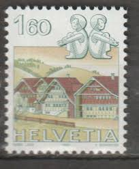 |
| eBay | Switzerland Semi-Postal Stamps for sale | eBay | 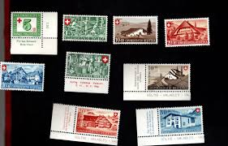 |
| IMAGO | SWITZERLAND - CIRCA 2003: stamp printed by Switzerland, shows Zipper designed by Winterhaller | 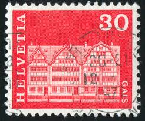 |
| Old-Stamps.com | Gais / Helvetia | 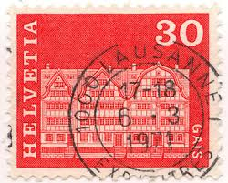 |
| ebid.net | Portugal 1943 Caravel Ship 10c Used Stamp. on eBid United States | 193306917 | 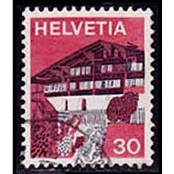 |
| Shutterstock | 5+ Thousand Elvezia Royalty-Free Images, Stock Photos & Pictures | Shutterstock | 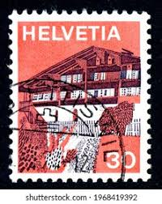 |
| stampsandstuff.net | Stamps from Switzerland | |
| Redbubble | "Erlenbach in Simmental Bern - 1973 Vintage Helvetia Stamp" Magnet for Sale by umilove | Redbubble | |
| Bob Shop | Switzerland & Helvetia - THEMATIC ARCHITECTURE SWITZERLAND ULH for sale in Durban (ID:665766673) | |
| Russian Philately | 1999 Sc 494 World Stamp Exhibition IBRA-99 Scott 6506 for sale at Russian Philately | |
| Dreamstime.com | Switzerland Circa Stock Illustrations – 23 Switzerland Circa Stock Illustrations, Vectors & Clipart - Dreamstime | |
| Dreamstime.com | 4,688 Mail Sticker Stock Photos - Free & Royalty-Free Stock Photos from Dreamstime - Page 40 | |
| 220 ideas de Sellos Suiza para guardar hoy | sellos, sellos postales, suiza y más | ||
| 1968 Switzerland Stamp (1) | ||
| HipStamp | Switzerland 1973 Scott 562 used - 30c, Traditional House, Simme Valley | Europe - Switzerland, General Issue Stamp / HipStamp | |
| Dreamstime.com | SWITZERLAND - CIRCA 1973: a Stamp Printed in Switzerland Shows Erlenbach in Simmental Bern, Circa 1973. Editorial Photography - Image of issue, black: 158453617 |